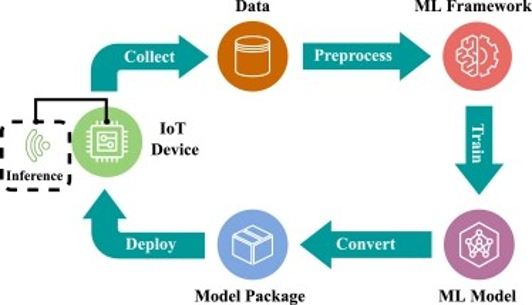

Жизненный цикл TinyML

1
Сбор данных
Получение данных с датчиков в реальных условиях эксплуатации.
2
Обучение модели
Обучение ML-модели на ПК или сервере.
3
Оптимизация
Ключевой этап, включающий квантование (представление весов в 8-битных целых числах), pruning (удаление несущественных нейронов) и knowledge distillation (обучение компактной модели на данных более сложной).
4
Развёртывание
Интеграция модели в прошивку микроконтроллера.